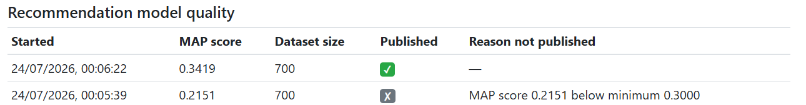

omegaUp has a model that answers "this student just solved problem X, what should they try next". This is the project that put its training on a schedule, made every run leave a record, and stopped a bad model from quietly replacing a good one.
What was wrong
The model was trained by a script that ran when somebody ran it. When I read the production schedule in July it was not on it.
Nothing recorded what a training run produced. If you wanted to know whether this week's model was better than last week's, there was no last week to compare against.
And the script saved the model whenever one number cleared a fixed bar. A model that was clearly worse than the one already serving students, but still above the bar, would overwrite it without a word.
What I built
Four pull requests, in the order the repository makes you do it: a table, its data access layer, the job, and a view for admins.
The job is now in the registry with a weekly schedule, Sundays at 04:00. It runs through the shared runner, so it gets a row in the run history, a lock, and phase timings without any code of its own for that.
Every run then writes a second row, in Recommendation_Model_Runs, with the score of the model it trained,
how much data it trained on, the parameters, the random seed, where the model file would go, whether it was
published, and the reason if it was not.
The two rules
The first rule is an absolute floor. The second compares against the last model that was published to the same place, and allows only a small drop.
if score < min_map_score:
return False, (
'MAP score %.4f below minimum %.4f' % (score, min_map_score))
if (last_published_map is not None
and score < last_published_map - max_map_regression):
return False, (
'MAP score %.4f regressed more than '
'%.4f below the last published '
'%.4f' % (score, max_map_regression, last_published_map))
return True, NoneThe floor alone only catches disasters. A model that squeaks over it while being clearly worse than the one it replaces would go straight through, which is why the second rule exists.
Before assigning me the issue, Juan Pablo asked a question I had not thought about properly: should a new model be compared against the last run, or the last published model? I chose the last published one. If you compare against the last run, the bar can drift down. Publish a model at 0.40, reject one at 0.20, and the next one at 0.25 looks like an improvement.
When a model is held back, the old file stays where it is, the run is recorded with the reason, the run history marks it as failed, and the process exits with a non zero status so that whatever is watching the job sees a failure.
The review that changed the number
On 2 September Juan Pablo reviewed the job and found four things wrong with it. All four were real, and one of them meant the central number of the project was not what I said it was.
A refused model still exited with success. I marked the run as failed in the history, but the process returned zero. Kubernetes and anything else watching the job would have seen nothing wrong.
The comparison was not scoped. It took the last published model from anywhere. Somebody training to a temporary file on their own machine could have set the bar that production then had to beat.
The score was not MAP. The column was called map_score, the flag was --min-map-score, and what I was
storing came from an older function in the script that only gave credit when a suggestion matched at exactly
the same position. That is not mean average precision. The real one was being computed a few lines below and
only logged.
Users the model could not answer for were dropped. If the model had no suggestion for a test user, that user was skipped and left out of the average. In his words:
a model covering only 1% of the test cases could still report perfect scores if it gets that 1% right
I fixed all four and wrote one named test for each. Counting the unanswered users properly lowered every metric by about a fifth on the test data, and using real MAP moved the numbers again, so the default floor went from 0.3 to 0.05. The metric got stricter, so the same model now scores lower, and the floor moved with it.
What is recorded now: MAP at k, where k is the number of suggestions shown, three by default, over users held out from training. Precision, recall and NDCG are computed and logged on every run as well, because one number does not tell you much about a ranking.
I had run the guardrail both ways in Docker before that review, watched a weak model get refused with the reason stored, and a good one get published. All of that worked. It was working on the wrong number, and I would not have found that by testing harder, because my tests agreed with my code.

Where it stands
The table, the data access layer and the job are merged. The view for admins is open and is the last piece before the parent issue closes.
The job has a schedule in the registry, but the registry is a record, not the scheduler. The entry in omegaUp's production deployment that would run it every Sunday has not been added yet. So today the model is recorded and guarded whenever it is trained, and it is still not trained on a schedule in production.
Since the summer this work has been useful to someone else. In September another contributor proposed a personalised recommendations feed, and Juan Pablo asked me what the pipeline could already do. I described what exists and what does not, and corrected one part of the design: syncing only the top few suggestions per problem can leave a user with an empty feed, because problems they have already solved are filtered out first. The plan was revised and accepted.
What this does not do
The guardrail proves that a new model is not much worse than the last one on an offline number. It does not prove the model is better for the students using it. That would need to be measured on the site, and nothing serves this model to users yet.
I left model versioning and rollback alone. The file layout and the serving side live in the production repository, and building it without seeing that risked building it wrong.
The pull requests
One row per training run: the score, the size of the data, the parameters, whether the model was published and why not if it was not. It also registers the job with a weekly schedule.
Juan Pablo noticed the random seed that decides the train and test split was not stored: Without it, training runs cannot be reproduced reliably or compared accurately
.
Data access for the model runs table, newest first.
The training job now records every run and refuses to publish a model that is too weak or clearly worse than the one it would replace.
The review of this one changed what the number means. It is the most useful review I received all summer.
Juan Pablo found four things. A refused model still exited with success, so anything watching the process saw nothing wrong. The comparison used any published model, so a test run to a temporary file could set the bar for production. The score I was storing as MAP was not MAP. And users the model could not answer for were being left out of the average: a model covering only 1% of the test cases could still report perfect scores if it gets that 1% right
.
A table on the admin page showing each training run, its score, and the reason if it was held back. Open, and the last piece before the parent issue can close.
The server half of #10052, split out and folded back the same day.
The issue
| Issue | What it asks for | Status |
|---|---|---|
| #10049 | Make the recommendation model training scheduled, recorded and guarded | open |